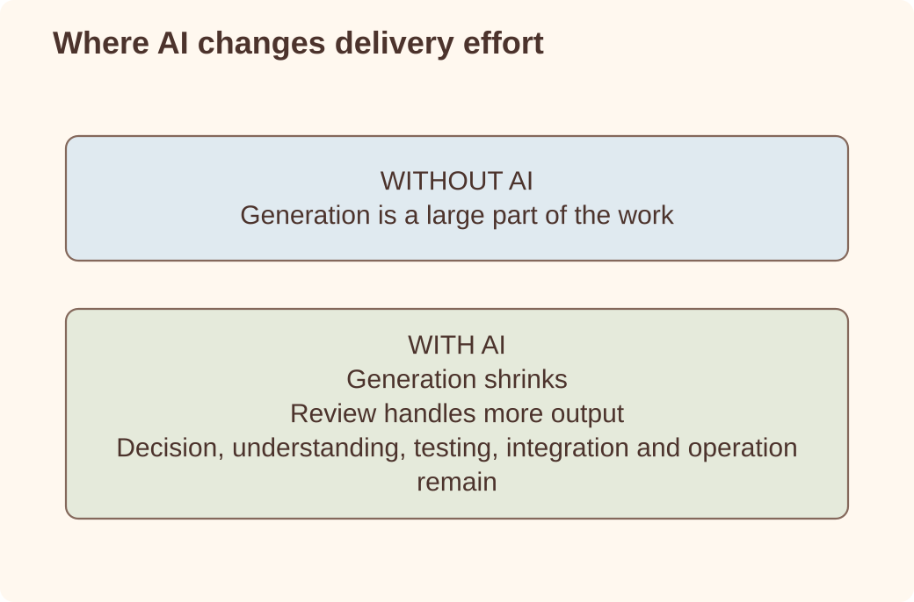
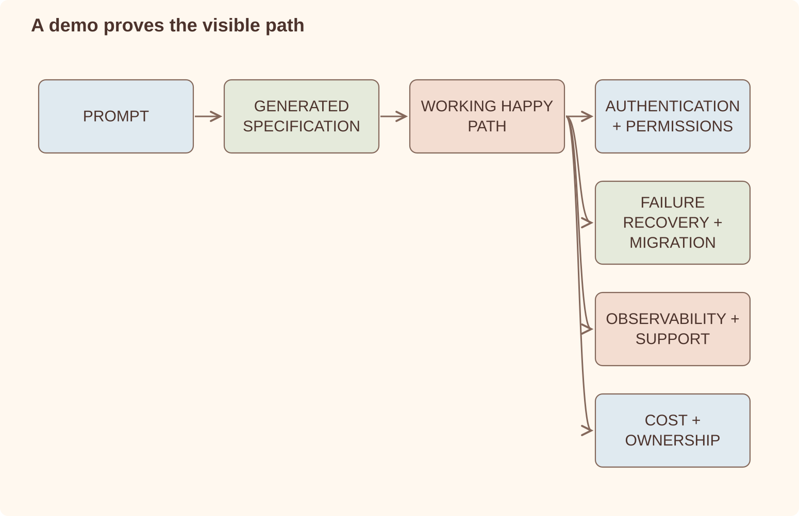
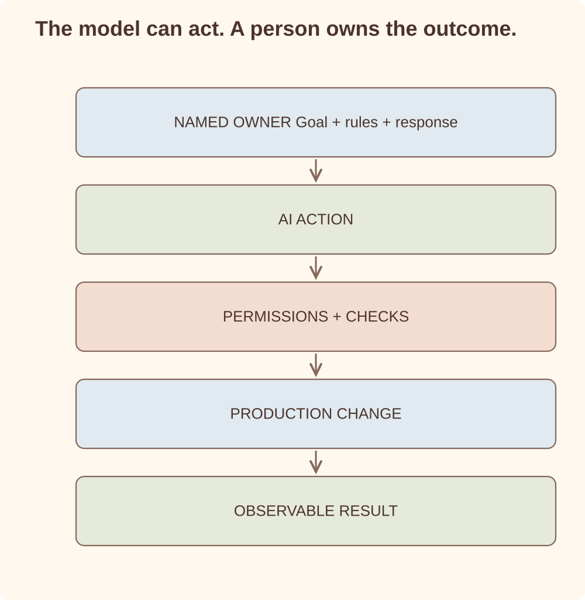

AI has made it much easier to produce something that looks technically complete.
A working demo can appear in a day. A detailed specification can arrive in minutes. The architecture diagram has all the expected boxes, the implementation plan covers every phase, and the generated explanation sounds more certain than many engineers do in a design review.
That is useful. It is also dangerous when confidence is mistaken for understanding.
The problem is not that non-engineers can now participate more directly in technical work. That is a good outcome. Product managers, designers and founders can test ideas without waiting for a full team. Engineers can explore alternatives faster. More people can turn vague requirements into something concrete enough to discuss.
The problem starts when a convincing artefact is treated as evidence that the difficult decisions have already been made.
Faster output is not the same as faster delivery
The argument about AI productivity is often framed around how much faster someone can write code. But writing code is only one part of shipping a production system.
Senior engineers also spend time deciding what should be built, understanding an existing system, reviewing changes, debugging failures, coordinating dependencies and deciding which risks are acceptable. AI does not accelerate all of those activities equally. In some cases, it creates more of them.
A generated pull request can be cheap for the author and expensive for the reviewer. A detailed specification can take minutes to produce and hours to verify. More code means more behaviour to understand, test, operate and eventually remove. The cost has not disappeared. It has moved downstream.
AI has also removed effort as a useful signal. Producing a twenty-page proposal once required enough work to filter out many weak ideas. Now the proposal is cheap, but rejecting it still requires someone to understand the system, trace the dependencies and explain why the confident answer does not fit reality.

Even a large improvement in coding speed produces a smaller improvement across the whole engineering day. The gain is limited by how much of the delivery system has actually become faster.
This is why lines of code, tickets completed and documents generated are weak measures of AI impact. I care more about whether a change becomes easier to understand, safer to release and cheaper to operate without shifting hidden work onto the next person.
A demo proves a path, not a product
A demo can prove that one path works under the conditions chosen for it. Production engineering begins with all the conditions the demo did not include.
AI can suggest answers to all of these questions. It cannot know which tradeoff an organisation is prepared to own unless that context has been made explicit. It also cannot be accountable when the answer is wrong.
I see a similar gap in real-time products. A feature that works with one user, one machine and controlled content may say very little about how it behaves with many avatars, unpredictable assets, network handoffs and a fixed frame budget. The code can be correct while the product is unusable.

The demo is still valuable. It has reduced the cost of learning whether an idea is possible. It has not removed the work required to decide whether that idea is safe, operable and worth maintaining.
Thorough-looking specifications can hide missing decisions
Before AI, an incomplete technical proposal often looked incomplete. Missing sections, rough notes and unresolved questions were visible.
AI is very good at filling empty space. It can produce requirements, milestones, risks, test plans and rollout stages in one consistent voice. The document looks finished even when the underlying decisions have not happened.
This changes the review problem. We can no longer use completeness of presentation as a proxy for completeness of reasoning. I would look for the decision trail instead:
A generated plan can help answer these questions. It should not be allowed to make their absence harder to notice.
AI is strongest when it makes uncertainty inspectable
The most useful AI work I have seen does not pretend to finish the decision. It makes the problem easier for a human to inspect.
In one AI-assisted architecture review, the useful result was not a general judgement that the code was over-engineered. The review turned that discomfort into an inventory: more than 45 interfaces had one implementation and no test coverage, alongside specific coupling and redundant-enum issues.
That did not prove every interface should be removed. It gave engineers a countable list they could verify, prioritise and challenge. AI reduced the cost of discovery while leaving the technical decision with the people who understood the system.
The same boundary applies to code review. AI can spot repeated patterns, suspicious complexity, forgotten tests and documentation drift. It can compress a large change so a reviewer gets to the important questions faster. It should not become the merge authority or replace the people who understand the architecture and user impact.
Good AI assistance makes uncertainty more visible. Bad AI theatre covers uncertainty with polished output.
Someone still has to own the system
An AI agent can execute tasks. It cannot own the system it changes.
It does not decide what failure rate is acceptable, respond when a dependency changes, explain a wrong number to finance or choose whether a workflow should be disabled after an incident. Giving an agent access to tools without assigning a human owner does not create autonomy. It creates an unowned production system.
In one developer tool, AI could help launch builds and tests. A controlled gateway still held the credentials, limited access and decided whether CI or a local request had priority. Those controls mattered because two runs could compete for the same test licence, a failed run could leave a resource unavailable, and unrestricted access could expose shared secrets. Someone still had to define those rules, monitor failures and change the system when the operating conditions changed.
The same principle appears in finance automation I have built. The model extracts information and suggests matches. A human resolves uncertainty, and deterministic code performs reconciliation, calculations and reporting. A wrong suggestion cannot quietly become a tax or reporting error. Someone must be able to find it, correct it and explain what happened.

AI can remove manual work. It cannot remove responsibility for the result.
Engineering judgment is not gatekeeping
There is a real risk that engineers use production complexity to dismiss useful experimentation. Every prototype does not need a security review, a capacity model and a migration strategy. Applying production standards before an idea has proved any value is another way to waste time.
The standard should match the decision being made. If the question is whether users understand a workflow, a lightweight prototype may be enough. If the question is whether the organisation should depend on the system, the evidence bar changes. Authentication, privacy, failure modes, observability, cost, ownership and support are no longer optional details.
Engineering judgment should help the team identify when that boundary has been crossed. Its job is not to protect engineering territory. It is to make the tradeoffs visible before the organisation inherits them accidentally.
The ownership test
Before an organisation depends on an AI system, I would want four questions answered:
If those answers are unclear, the system is not autonomous. It is unowned.
Use AI to explore more options, expose gaps earlier and turn vague concerns into evidence. Then make the decision explicit: what are we choosing, which tradeoff are we accepting, how will we know whether it worked, and who will own the result when the demo becomes a system?